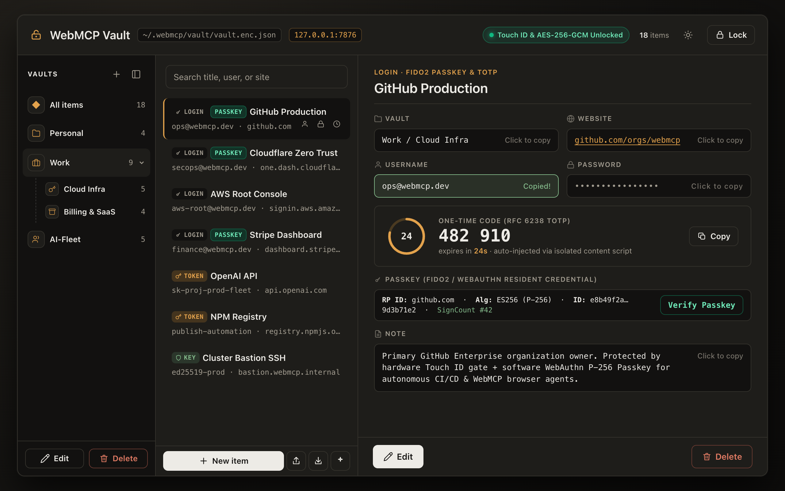
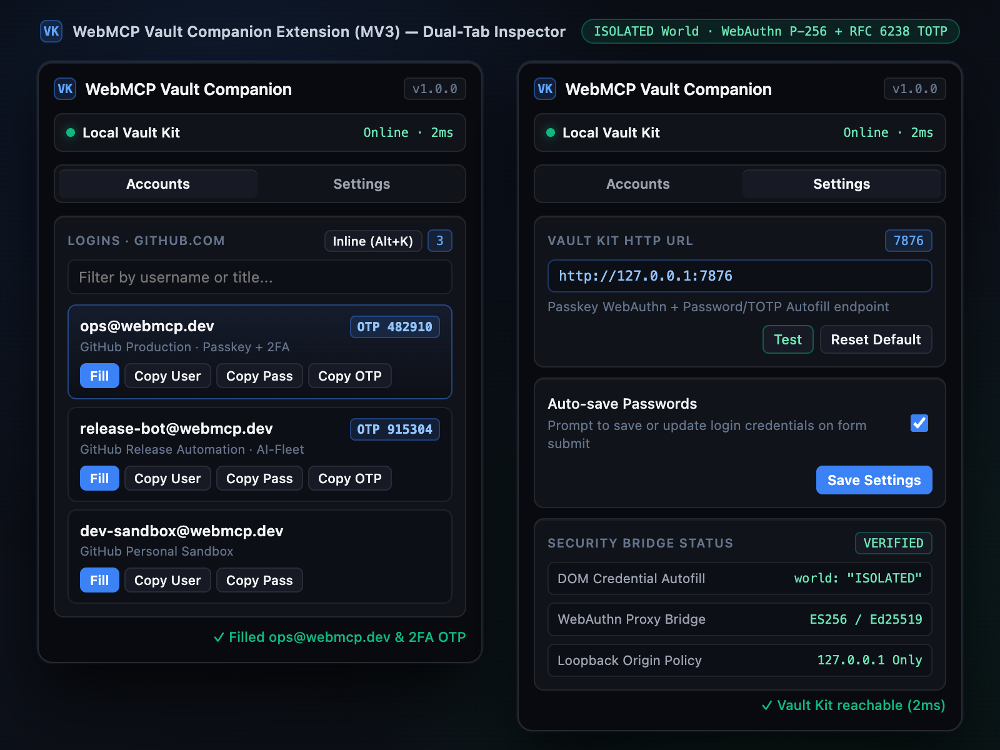
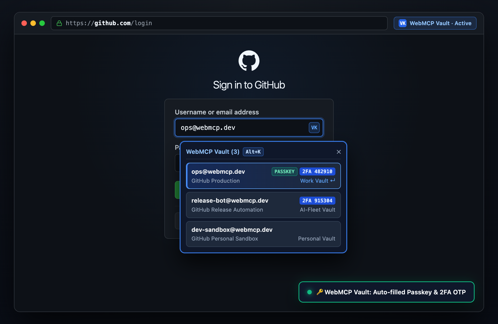
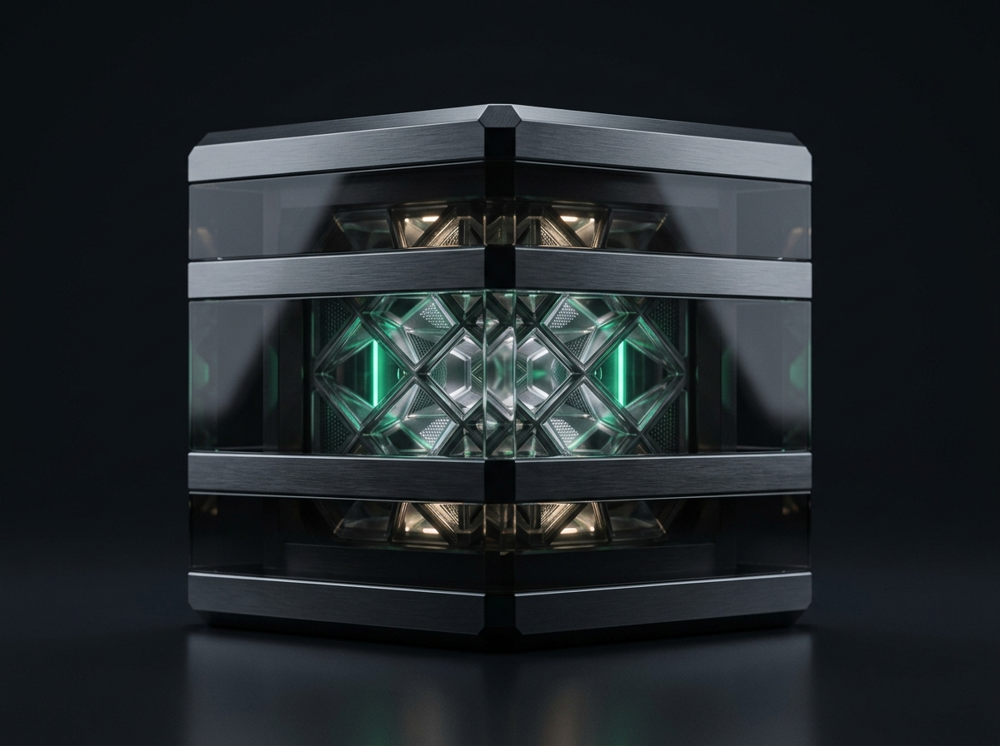

100% Loopback · Không máy chủ trung gian
Extension chỉ kết nối tới http://127.0.0.1:7876 ngay trên máy của bạn. Không tài khoản đám mây, không phụ thuộc kết nối internet, không nguy cơ lộ dữ liệu từ bên thứ ba.
Mã hóa AES-256-GCM ngay trên máy, tự động ký FIDO2 Passkey và điền nhanh mật khẩu kèm OTP qua phím tắt Alt+K.




Ba điểm chạm đồng bộ qua cổng cục bộ 127.0.0.1:7876: Bảng điều khiển Vault, Popup tiện ích và Menu điền nhanh Alt+K trên trang.
Nhấn Alt+K tại bất kỳ ô đăng nhập nào để mở hộp chọn tài khoản bọc trong Closed Shadow DOM. Tự động điền Username, Password và copy mã 2FA OTP trong môi trường cô lập ISOLATED world.

Tự động lọc tài khoản khớp với tên miền của tab đang mở, hiển thị mã OTP 6 số trực tiếp và trạng thái kết nối tới Local Vault (:7876).
Phân loại tài khoản theo Personal, Work, Finance, Social hoặc AI Fleet. Hỗ trợ xem trước khi import CSV/1Password và mở khóa bằng Touch ID trên macOS.
Mọi khóa bí mật được mã hóa tại chỗ và chỉ trao đổi qua giao thức cục bộ giữa trình duyệt, CLI và AI Agent.
Extension chỉ kết nối tới http://127.0.0.1:7876 ngay trên máy của bạn. Không tài khoản đám mây, không phụ thuộc kết nối internet, không nguy cơ lộ dữ liệu từ bên thứ ba.
Ký xác thực ECDSA P-256 (ES256) và Ed25519 với cờ tương thích Synced Passkey (0x1d) cho Google, GitHub, Microsoft và Apple.

Lưu trữ trong tệp credentials.enc.json (quyền 0600) với khóa dẫn xuất scrypt (N=16384, r=8, p=1) và ghi nguyên tử chống hỏng file.
Cấp quyền truy cập tạm thời theo từng trang (scoped lease) hoặc đọc mật khẩu, OTP, API token trực tiếp từ dòng lệnh.
$ webmcp-vault read --web https://github.com otp
482910Khôi phục nguyên vẹn cả khóa bí mật Passkey từ cơ sở dữ liệu 1Password 8 (2SKD / .1pux), nhập CSV Bitwarden và gom tệp .env.
$ webmcp-vault import ./passwords.csv --preview
$ webmcp-vault env-import .env --title "Prod"Cài đặt qua npm hoặc chạy trực tiếp từ repo mã nguồn mở, sau đó nạp tiện ích vào Chrome.
Tạo tệp khóa mở khoá và khởi tạo cơ sở dữ liệu AES-256-GCM tại ~/.webmcp/vault/.
npx @gyga-browser/webmcp-vault-kit init
Chạy ngầm dịch vụ Vault trên cổng 127.0.0.1:7876 để phục vụ trình duyệt và AI Agent.
webmcp-vault ui ensure --json
Tải gói .zip bên dưới, giải nén và chọn Load unpacked tại trang chrome://extensions.
chrome://extensions → Load unpacked
.zip
Mọi thông số dưới đây được kiểm chứng trực tiếp trong bộ unit test của @gyga-browser/webmcp-vault-kit.
Sinh vector khởi tạo ngẫu nhiên 12-byte mới ở mỗi lần ghi, chống sửa đổi trái phép tệp dữ liệu.
Dẫn xuất khóa 256-bit trong bộ nhớ RAM với muối ngẫu nhiên riêng biệt; khóa gốc không bao giờ ghi xuống đĩa.
Tuân thủ W3C WebAuthn Level 3, kiểm tra nghiêm ngặt Relying Party ID (rpId) chống tấn công giả mạo tên miền.
Mật khẩu và mã 2FA OTP chỉ được điền từ ISOLATED world, tuyệt đối không đi qua MAIN world của trang web.